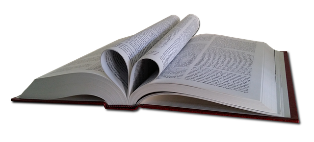
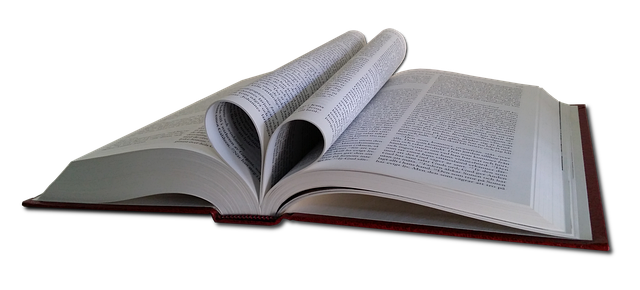
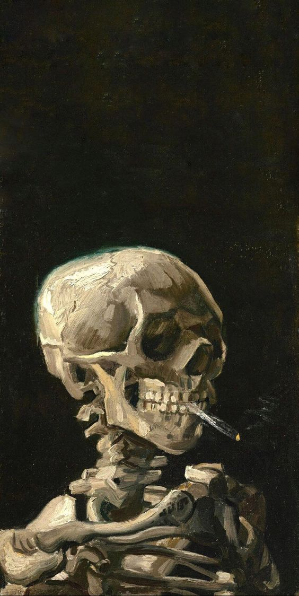

Book Friend
 

Top 5 de libros de terror
Lista hecha por Tecnolochicas PRO
- Dejad a los niños - John Saul
- It - Stephen King
- El sabueso de los Baskerville - Arthur Conan Doyle
- Calculo dde varias variables - James Stewart
- Frankenstein - Mary Shelley
Best Sellers
- Out live: The science and art og longevity
- The Waner: A tale of shipwreck, mutiny and murder
- Assistant to the villain
- Romper el circulo
FANTASIA
Los libros de fantasía son como puertas mágicas que nos transportan a mundos donde la imaginación no conoce límites. En estas obras, la realidad se entrelaza con lo sobrenatural, y lo imposible se convierte en parte integral de la trama. Aquí, dragones surcan cielos épicos, magos lanzan hechizos con un movimiento de sus varitas y héroes se enfrentan a desafíos inimaginables. Los libros de fantasía nos invitan a escapar de la rutina diaria y a sumergirnos en aventuras extraordinarias donde la creatividad del autor nos lleva a explorar lo desconocido y lo asombroso. Estas historias despiertan la imaginación, alimentan nuestros sueños y nos recuerdan que, en el mundo de la literatura de fantasía, cualquier cosa es posible.
NOVELAS
Las novelas literarias, ese vasto y enriquecedor universo de la literatura, son un medio poderoso a través del cual los autores pueden contar historias, explorar la psicología humana y expresar sus visiones del mundo. Estas obras de ficción han cautivado a lectores de todas las edades y culturas a lo largo de la historia, dejando una huella indeleble en el paisaje literario. En resumen, las novelas literarias son una ventana a la imaginación humana y una forma de explorar la complejidad de la vida y la condición humana. A través de la narrativa rica y la profundidad psicológica, estas obras continúan siendo un tesoro inagotable de la literatura, enriqueciendo nuestras vidas y ampliando nuestra comprensión del mundo que nos rodea.
TERROR
Los libros de terror son maestros en el arte de la inquietud y el escalofrío. A través de sus páginas, los autores tejen narrativas oscuras que exploran los rincones más profundos de nuestros temores más primitivos. Estas historias nos llevan a enfrentarnos a lo desconocido, a las sombras y a lo macabro, creando una experiencia literaria intensamente visceral. Los personajes son perseguidos por fuerzas sobrenaturales, acosados por monstruos de pesadilla o atrapados en situaciones aterradoras de las que parece no haber escape. Los libros de terror nos sumergen en un mundo donde la tensión y el suspense son palpables, y cada página leída nos acerca más al límite de nuestro propio miedo. A través de estas historias, los lectores descubren la fascinación por lo terrorífico y el poder liberador de enfrentar lo que nos aterra en un entorno seguro: entre las páginas de un libro.
ACADEMICOS
Los libros académicos representan una fuente inestimable de conocimiento riguroso y bien fundamentado. Estas obras son el resultado de extensas investigaciones, análisis críticos y esfuerzos por comprender y explicar aspectos específicos de nuestro mundo. Cubren una amplia gama de disciplinas, desde la ciencia y la tecnología hasta las humanidades y las ciencias sociales. Los libros académicos son esenciales para el avance de la sociedad, ya que proporcionan una base sólida para la educación, la toma de decisiones informadas y la innovación. Estas obras a menudo se convierten en referencias indispensables para estudiantes, académicos y profesionales que buscan profundizar en un campo específico o expandir sus horizontes intelectuales. En última instancia, los libros académicos son faros de conocimiento que iluminan el camino hacia la comprensión y el progreso en nuestras vidas y sociedades.
CIENCIA FICCION
Los libros de ciencia ficción son portales literarios que nos llevan a viajar a través del tiempo y el espacio, explorando realidades alternativas y futuros distópicos. Estas obras son un escaparate de la imaginación humana en su máxima expresión, donde las posibilidades son ilimitadas. A través de historias ambientadas en galaxias lejanas, en un futuro tecnológicamente avanzado o en mundos donde las leyes de la física son reescritas, los autores de ciencia ficción nos desafían a cuestionar el statu quo y a reflexionar sobre el impacto de la tecnología y la ciencia en nuestras vidas. Estos libros no solo entretienen, sino que también provocan preguntas profundas sobre la naturaleza de la humanidad, la moralidad y el destino de la civilización. Los lectores de ciencia ficción se embarcan en un viaje intelectual que les permite explorar conceptos científicos, sociales y filosóficos de manera única, mientras disfrutan de aventuras emocionantes en mundos aún por descubrir.
TEATRO
Los libros sobre teatro son una fuente invaluable de conocimiento y sabiduría para aquellos que se sienten atraídos por el fascinante mundo del escenario. Estas obras ofrecen una mirada profunda y enriquecedora sobre el arte de la actuación, la dirección, la dramaturgia y todos los aspectos que convergen en la producción teatral. A través de la lectura de libros sobre teatro, los amantes de esta forma de arte pueden explorar las técnicas, las teorías y las historias que han dado forma a la representación escénica a lo largo de la historia. Además, estos libros inspiran a actores y directores a experimentar con nuevas perspectivas y enfoques creativos, lo que enriquece la evolución continua del teatro como un medio para expresar la condición humana y provocar emociones profundas en el público. Estas obras literarias son esenciales tanto para quienes buscan una comprensión más profunda del teatro como para aquellos que desean perfeccionar su oficio en las tablas, creando un puente entre la teoría y la práctica en este apasionante mundo artístico.
MISTERIO
Los libros de misterio son la puerta de entrada a un mundo enigmático y lleno de intrigas donde la resolución de enigmas y la búsqueda de la verdad son la esencia misma de la narrativa. Estas obras literarias sumergen a los lectores en tramas misteriosas, donde crímenes sin resolver, secretos ocultos y personajes intrigantes tejen una red de suspenso y emoción. A medida que los protagonistas y detectives ficticios desentrañan los hilos del misterio, los lectores se embarcan en una emocionante odisea intelectual, tratando de resolver el enigma por sí mismos. Los libros de misterio ofrecen una combinación única de entretenimiento y desafío mental, manteniendo a los lectores pegados a sus páginas mientras intentan adelantarse a las revelaciones finales. Además, estos libros exploran temas profundos como la moralidad, la justicia y la naturaleza humana, haciendo que la experiencia de lectura sea tanto intrigante como reflexiva. En resumen, los libros de misterio son un viaje emocionante hacia lo desconocido, donde cada página es una oportunidad para resolver un rompecabezas literario y descubrir los oscuros secretos que yacen en la sombra.
COMICS
Los cómics son una forma de narrativa visual que ha cautivado a personas de todas las edades en todo el mundo. Estas obras maestras del arte secuencial combinan ilustraciones expresivas con texto para contar historias que abarcan géneros que van desde la acción y la aventura hasta la ciencia ficción, el drama y la comedia. Los superhéroes icónicos como Superman, Batman y Spider-Man tienen su origen en las páginas de cómics, pero el medio también ha dado vida a una amplia variedad de personajes y mundos, cada uno con su propio atractivo y mitología. Los cómics ofrecen una experiencia de lectura única, donde los lectores pueden sumergirse en la narración visual y dejar que su imaginación se mezcle con las imágenes y palabras en las viñetas. Además, los cómics a menudo exploran temas profundos y actuales, lo que los convierte en una forma de arte poderosa para transmitir mensajes sociales y políticos. Ya sea a través de historias épicas de superhéroes o narrativas más personales e íntimas, los cómics son una celebración de la creatividad, la imaginación y la capacidad de contar historias de una manera única y visualmente impactante.
Lee mas AQUIHaz click en esta imagen para una sorpresa
